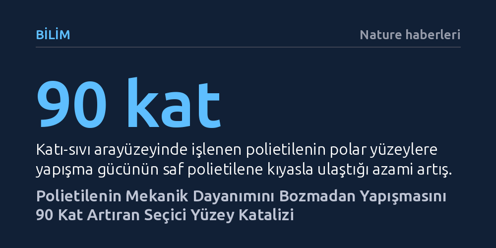

BILIM · Nature haberleri · 2026-10-14
Geliştirilen demir katalizörlü yöntem, katı polietilenin iç mekanik yapısını bozmadan yüzey yapışma gücünü 90 kata kadar artırıyor. 80 derecenin altında çalışan teknik, plastiklerin mukavemetini korurken polar yüzeylere güçlü biçimde tutunmasını sağlıyor.
Dünyanın en yaygın plastiği olan polietilenin mukavemet ve erime noktasını kaybetmeden başka yüzeylere güçlü şekilde yapışabileceğini göstererek malzeme mühendisliğindeki köklü bir açmazı çözüyor.

Günlük yaşamda ambalajlardan boru hatlarına kadar her yerde karşımıza çıkan polietilen (PE), küresel ölçekte üretilen tüm plastiklerin dörtte birinden fazlasını tek başına oluşturuyor. Bu muazzam yaygınlığın arkasında polietilenin olağanüstü mekanik mukavemeti, hafifliği, kimyasal direnci ve düşük maliyetle kolayca işlenebilmesi yatıyor. Ancak saf polietilenin endüstriyel açıdan kritik bir zaafı bulunuyor: Yüzeyi tamamen apolar ve kimyasal olarak inert olduğundan boya, mürekkep, yapıştırıcı ya da metal gibi polar yüzeylere neredeyse hiç tutunamıyor.
Polietilene bu eksik yapışma özelliğini kazandırmak için bugüne dek uygulanan yöntemler daima çetin bir ödünleşmeyle sonuçlandı. Polimer zincirlerine yeni kimyasal gruplar eklemeyi hedefleyen klasik yaklaşımlar, homojen bir ortamda malzemenin geneline etki ettiğinde plastiğin iç yapısını bozuyordu. Polietilenin çekme dayanımı düşüyor, erime noktası değişiyor ve malzemeyi vazgeçilmez kılan temel fiziksel nitelikler geri dönülmez biçimde kayboluyordu. Yüzeyi yapışkan hale getirmeye çalışırken plastiğin kendisini zayıflatmak, polimer mühendisliğinin on yıllardır aşamadığı temel bir tıkanıklıktı.
Nature dergisinde yayımlanan bu yeni çalışma, polimeri eritmeden veya bir çözücü içinde homojen olarak dağıtmadan, doğrudan katı haldeki polietilen yüzeyinde katalitik bir dönüşüm gerçekleştirerek bu sorunu kökünden çözüyor. Araştırmacılar, katı polietilen ile sıvı faz arasındaki temas hattında (katı-sıvı arayüzeyi) son derece kontrollü bir reaksiyon ortamı tasarladı. Bu yaklaşım sayesinde kimyasal müdahale yalnızca malzemenin dış temas yüzeyiyle sınırlandırıldı; polimerin iç kütlesine nüfuz etmesi tamamen engellendi.
Geliştirilen reaksiyon mekanizmasında şaşırtıcı olan, sürecin son derece ılımlı koşullarda işlemesi. Yöntem, yalnızca yüzde 0,001 mol gibi son derece düşük oranda demir katalizörü ve ucuz oksitleyiciler kullanarak, 80 santigrat derecenin altındaki sıcaklıklarda çalışıyor. Katalizör, polietilen zincirlerindeki kararlı ve tepkimeye girmesi zor karbon-hidrojen (C-H) bağlarını seçici olarak hedef alıyor ve yüzeydeki metilen birimlerini oksitleyerek keton gruplarına dönüştürüyor.
Elde edilen sonuçlar, polimerin yapışma kabiliyetinde devrimsel bir sıçramaya işaret ediyor. Katı-sıvı arayüzeyinde işlevselleştirilen polietilen, polar yüzeylere saf polietilene kıyasla tam 90 kata kadar daha güçlü yapışıyor. Üstelik bu performans, homojen bir çözelti ortamında benzer düzeyde işlevselleştirilmiş polietilenin yapışma gücünden bile 4 kat daha yüksek. Bunun temel nedeni, oksitlenmiş keton gruplarının polimerin derinliklerine dağılmak yerine doğrudan dış teması sağlayacak arayüzeyde yoğunlaşması.
Daha da önemlisi, bu olağanüstü yapışma performansı elde edilirken polietilenin iç mekanik özelliklerinden hiçbir şey feda edilmiyor. Malzemenin erime sıcaklığı ve çekme dayanımı, işlem görmemiş orijinal polietilenle tamamen aynı kalıyor. Ayrıca araştırmacılar, yüzeydeki keton gruplarının istendiğinde başka kimyasal modifikasyonlarla yapışma gücünü daha da ileri taşıyacak şekilde dönüştürülebileceğini ve kazanılan yüzey özelliklerinin geleneksel seçici olmayan yüzey oksidasyonlarına kıyasla çok daha uzun süre kalıcı olduğunu kanıtladı.
Geleneksel plazma veya alev gibi yüzey işleme yöntemleri, polimer yüzeyinde rastgele parçalanmalara ve kısa sürede kaybolan kararsız yüzey özelliklerine yol açıyordu. Bu çalışmada ortaya konan seçici C-H bağı işlevselleştirmesi ise moleküler cerrahi hassasiyetinde bir çözüm sunuyor. Ucuz bir demir katalizörle ve enerji tasarruflu ılımlı sıcaklıklarda gerçekleştirilebilmesi, yöntemin endüstriyel ölçekteki üretim hatlarına uyarlanabilme potansiyelini olağanüstü ölçüde güçlendiriyor.
Bu bulgu, otomotivden elektroniğe, medikal cihazlardan gelişmiş kompozit malzemelere kadar sayısız sektörde polietilenin kullanım alanını genişletebilir. Artık polietilen, dayanıklılığından ve hafifliğinden ödün vermeden metallere, camlara, boyalara ve diğer polimerlere doğrudan ve sağlam biçimde bağlanabilecek. Katı-sıvı arayüzeyinde seçici C-H katalizi, malzeme biliminde sadece polietilen için değil, diğer dirençli polimerlerin modifikasyonu için de yepyeni bir metodolojik çağın kapısını aralıyor.